01 / 10
The knitted polo
The single most refined casual garment. Short sleeve in summer, long sleeve in winter. Chocolate, navy, cream or forest green. Always tucked, top button open.
Budget Uniqlo, Massimo Dutti Step up John Smedley, Sunspel
Issue 07 — The Casual Issue
The casual issue
The quiet art of looking expensive in casual clothes.
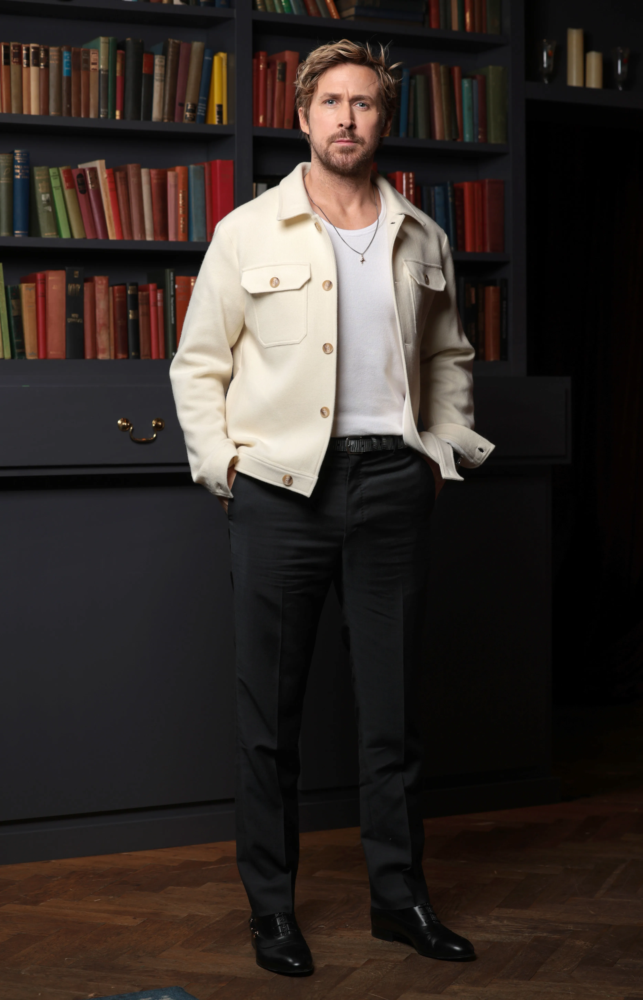
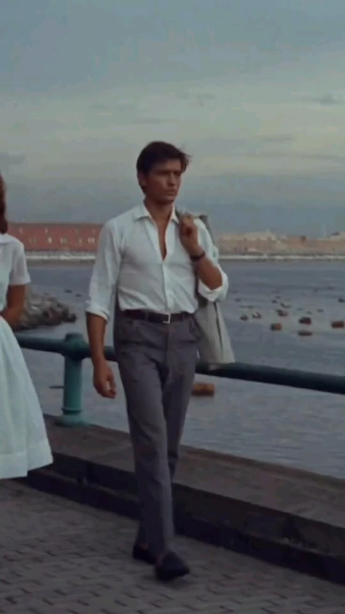
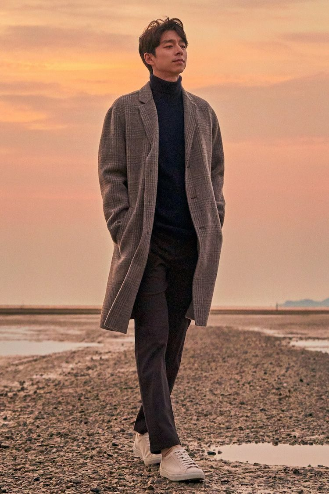
Editor's letter
There is a kind of man who walks into a room in a navy knit, cream trousers and suede loafers, and somehow looks more expensive than the guy in the designer logo T-shirt.
He isn't wearing anything special. Nothing is loud, nothing is new-looking, nothing is trying. And yet everything is right: the knit sits just so on the shoulders, the trousers fall cleanly to the shoe, the colours look like they were chosen by someone with taste. Because they were.
That is the look this issue is about. Not "smart casual", not a trend, not a costume. Call it refined, quiet, effortless. Paul Newman had it in a white shirt and khakis. Alain Delon had it on a yacht. Gong Yoo has it in a camel coat. And it is far more learnable than it looks.
What follows is the method: the principle, the palette, the silhouette, the fabrics, the ten pieces, the details. And a lookbook of men who wear it best, broken down so you can steal from them.
I
The principle
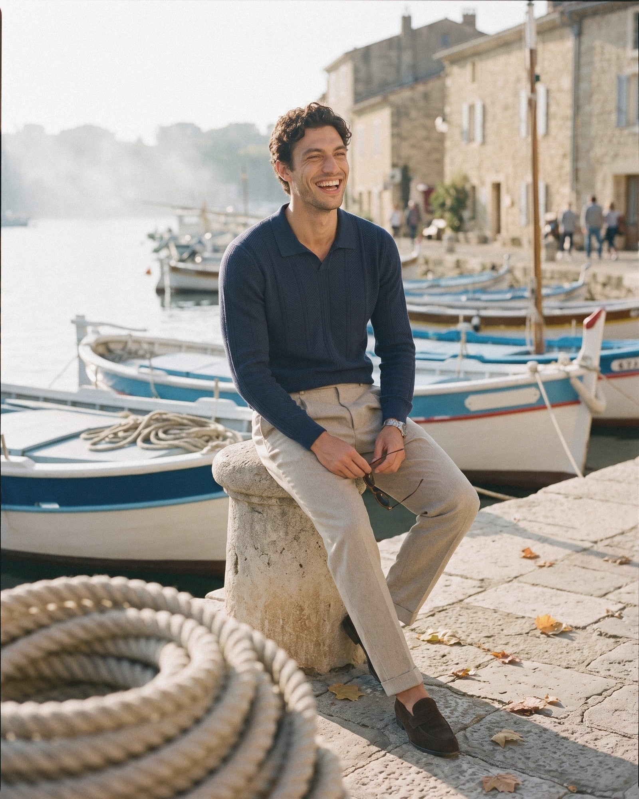
Refined dressing runs on one idea: nothing should announce itself.
No logos. No slogans. No shiny fabrics, no distressed denim, no trainers that look like spaceships. Every piece is simple enough to disappear, and good enough that, together, they make an impression.
That means the work is invisible. It's in the fit, the colour, the fabric and a handful of small styling decisions. Get those right and a plain knit and trousers look like money. Get them wrong and the most expensive clothes look like a costume.
II
The palette
The fastest way to look expensive is to stop mixing colours. Pick one colour family and dress in shades of it, head to toe, with different textures.
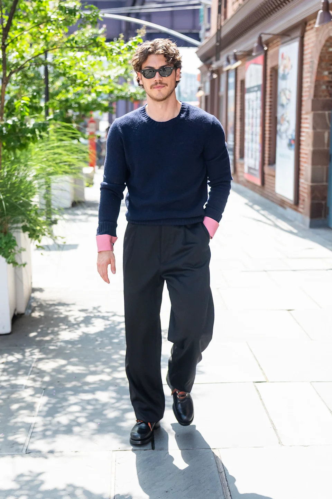
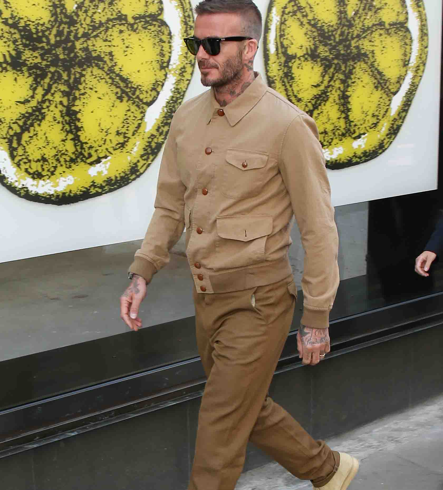
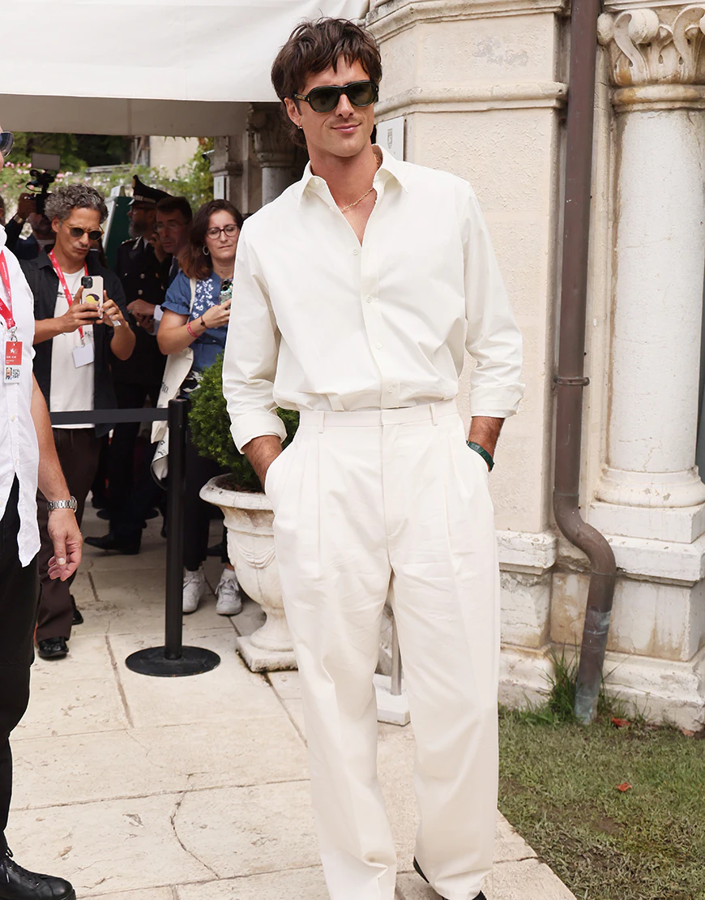
The base
The pairings
The one-accent rule. If you want colour, add exactly one: a sky-blue shirt, a forest-green knit, a burgundy scarf. Everything else stays neutral.
III
The silhouette
The refined silhouette is relaxed, not baggy. Clean at the shoulders, a little room in the leg, and a defined waist.
The seam sits on your shoulder bone. Everything else can be easy; this can't.
Tuck it in. Knit polos, shirts and fine knits all look better tucked into trousers that sit at your natural waist, not your hips.
Straight or gently wide trousers, often pleated. Skinny makes everything look cheap and dated.
Trousers just touch the shoe, or show a sliver of ankle. Hem everything. Puddling fabric kills the whole look.
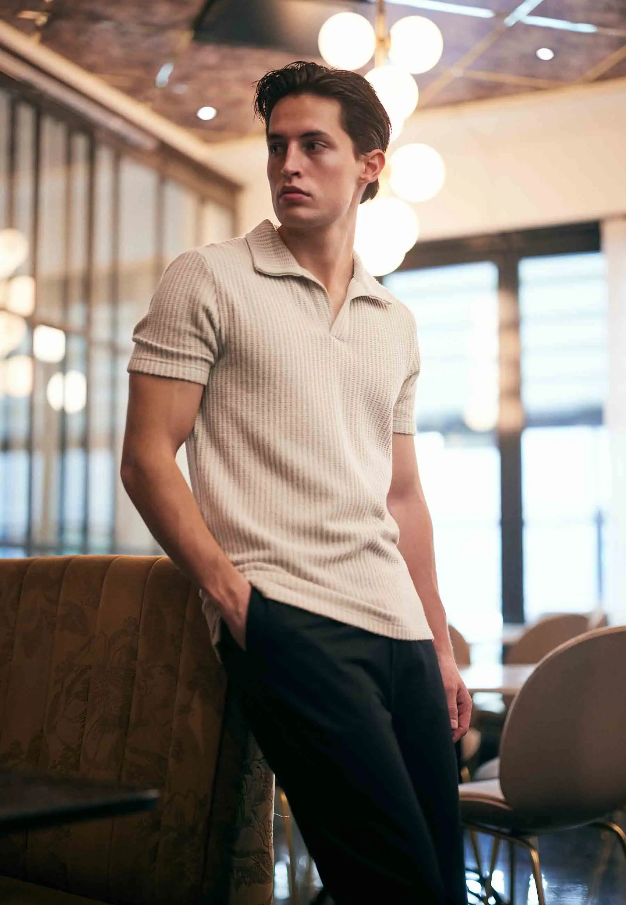
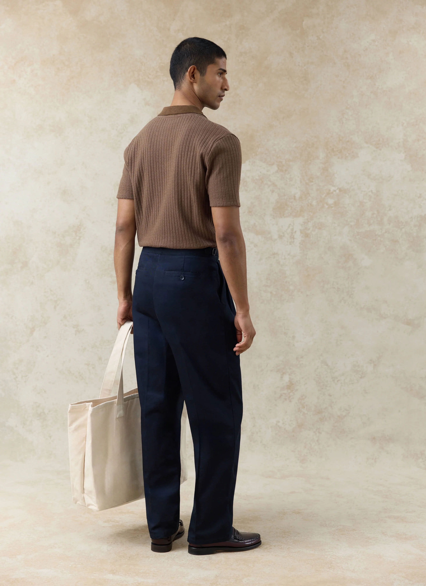
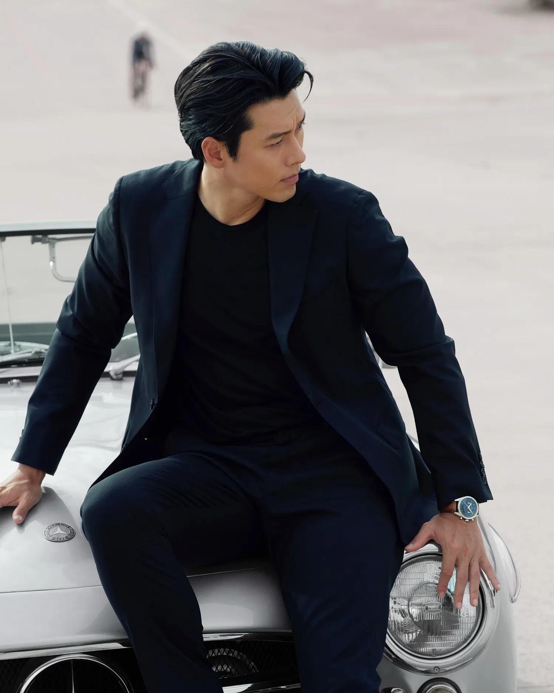
IV
The fabric
When the colours are quiet and the cuts are simple, fabric is what makes an outfit look rich. Swap cotton jersey for these and the same outfit levels up.

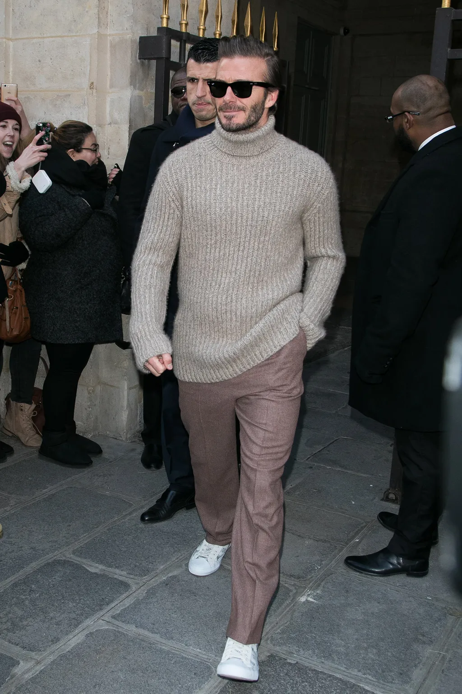


V
The wardrobe
Everything here goes with everything else. Own these ten and getting dressed takes thirty seconds.
01 / 10
The single most refined casual garment. Short sleeve in summer, long sleeve in winter. Chocolate, navy, cream or forest green. Always tucked, top button open.
Budget Uniqlo, Massimo Dutti Step up John Smedley, Sunspel
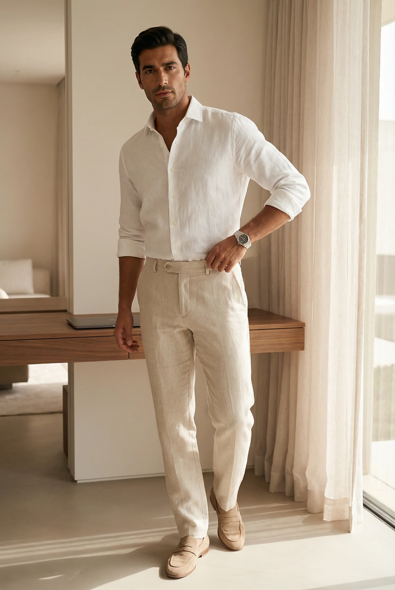
02 / 10
Oxford for most of the year, linen in summer. Worn open at the neck, sleeves turned back twice. Slightly rumpled is better than stiff.
Budget Uniqlo Oxford, Mango linen Step up Ralph Lauren, Drake's
03 / 10
Fine merino, close but not tight. Over a white tee, over a shirt with the collar out, or knotted over the shoulders on a summer night.
Budget Uniqlo Extra Fine Merino Step up Arket, John Smedley
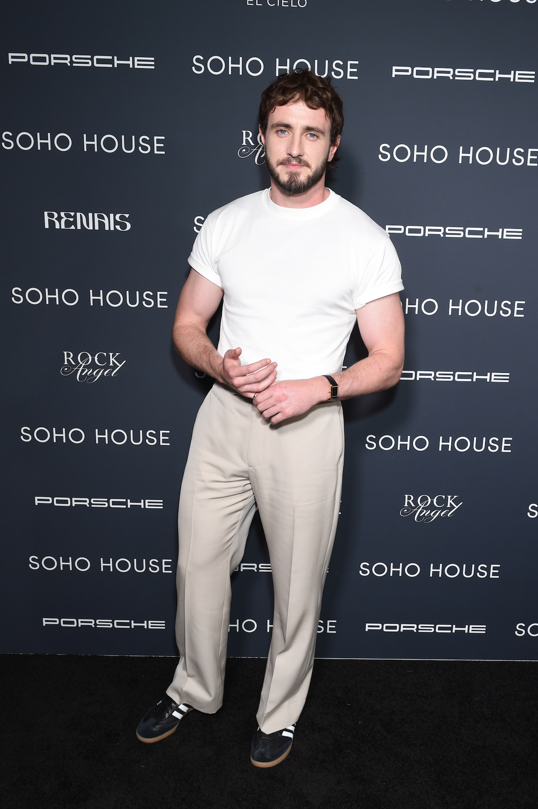
04 / 10
Thick cotton that holds its shape, shoulder seam on the shoulder. Tucked into trousers it's refined; with jeans it's classic.
Budget Uniqlo U Step up Asket, Sunspel
05 / 10
Suede, wool or heavy cotton, worn open as a light jacket. Tan, olive or navy. It turns a tee and trousers into an outfit.
Budget Uniqlo, Arket Step up Massimo Dutti suede, Private White
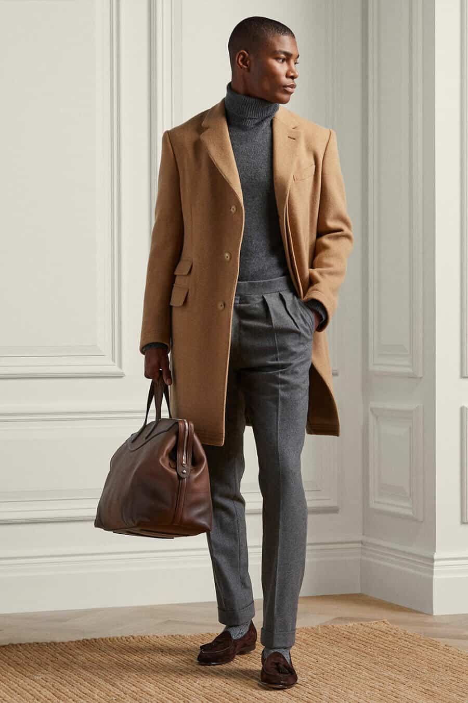
06 / 10
Below the knee, single-breasted, worn open over a roll-neck or crewneck. Nothing else in a winter wardrobe does as much.
Budget Mango, Uniqlo Step up COS, Reiss, Massimo Dutti
07 / 10
High rise, one or two pleats, a straight or slightly wide leg. Cream, grey, navy or brown. The backbone of the whole look.
Budget Uniqlo, Massimo Dutti Step up COS, Percival
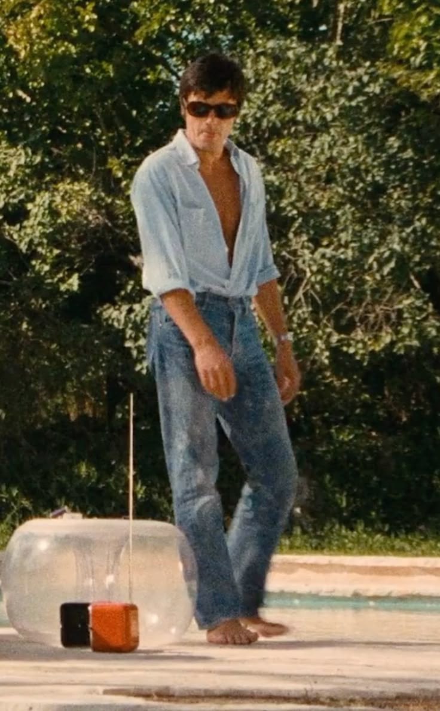
08 / 10
One pair, dark and clean, straight leg, no rips. Worn with a crisp shirt or a knit, they look as refined as trousers.
Budget Levi's 501 Step up A.P.C., Japanese selvedge

09 / 10
Suede or polished leather, penny or horsebit, in brown. Bare ankles in summer, fine wool socks in winter. The shoe that says "I know".
Budget G.H. Bass Step up Meermin, Crockett & Jones

10 / 10
Slim, minimal, barely branded, and kept spotless. The only trainer that belongs in this wardrobe.
Budget Adidas Stan Smith Step up Common Projects
VI
The lookbook
01 / 12
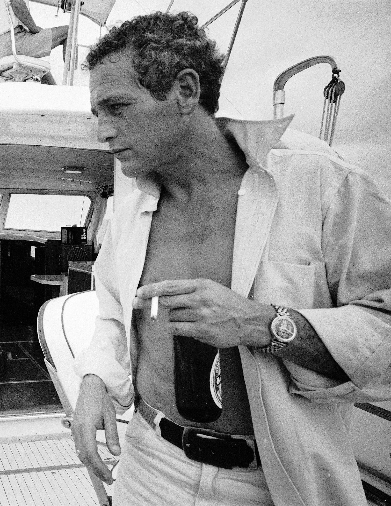
Paul Newman · 1960s
A white shirt with the sleeves rolled, pale chinos, sunglasses. That's the whole outfit. It works because everything fits and nothing tries.
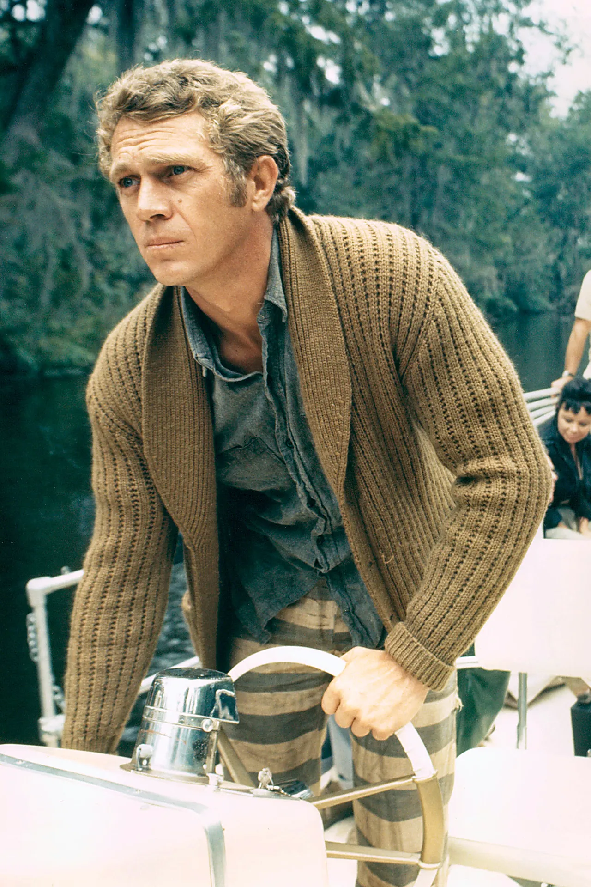
Steve McQueen · 1968
A soft tweed jacket over a fine roll-neck, no tie, no shirt. Smart enough for anywhere, relaxed enough to look like he didn't think about it.
Alain Delon · Plein Soleil, 1960
White shirt, white trousers, a tan. Tonal dressing at its most glamorous. Only works if it's clean, pressed and fits like this.
Gong Yoo · Goblin, 2016
A long coat, worn open, moving in the wind, with a dark knit and trousers underneath. The most romantic piece a man can own.
Ryan Gosling
A cream jacket over a white tee, black trousers. Light on top, dark below: a modern take on old Hollywood ease.
Hyun Bin
Chocolate knit polo tucked into pale trousers. The quiet-luxury uniform in one photo. Note the fit: close but never tight.
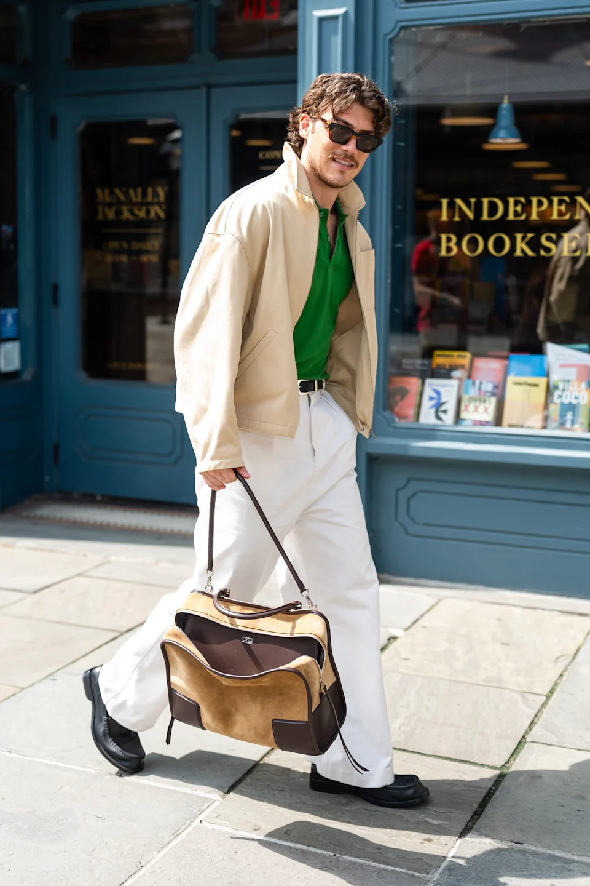
Jacob Elordi
A cream trench over simple layers. Tall men can carry the length; everyone can borrow the colour.
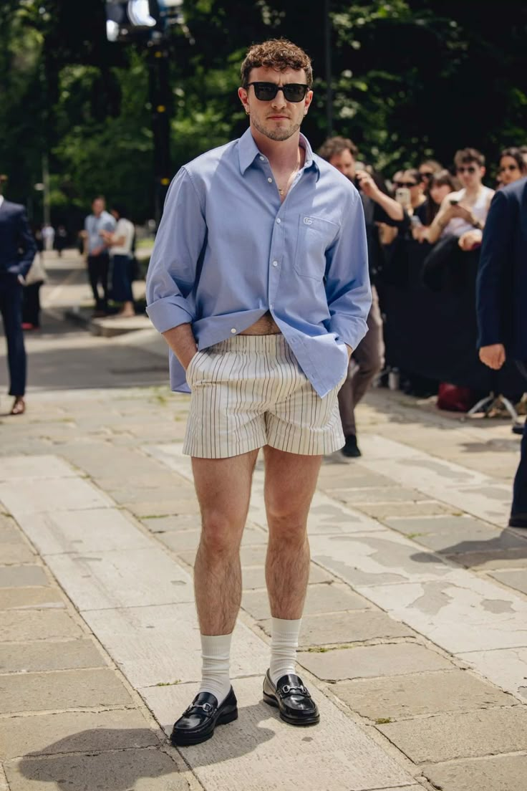
Paul Mescal
Short, tailored shorts with a crisp blue oxford. Proof that shorts can look refined, as long as they're short and the shirt is good.
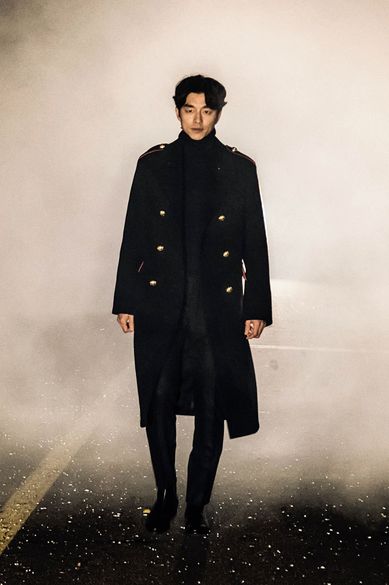
Gong Yoo
A long black coat over black. In the city, at night, nothing looks sharper. Vary the textures so it isn't flat.
David Beckham
A chunky cream knit with tonal trousers. Soft, warm, expensive-looking, and flattering on almost everyone.
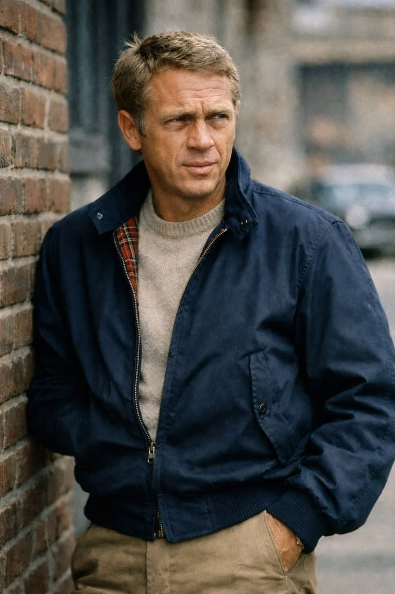
Steve McQueen
A short navy jacket with chinos and desert boots. The definitive weekend jacket for sixty years.
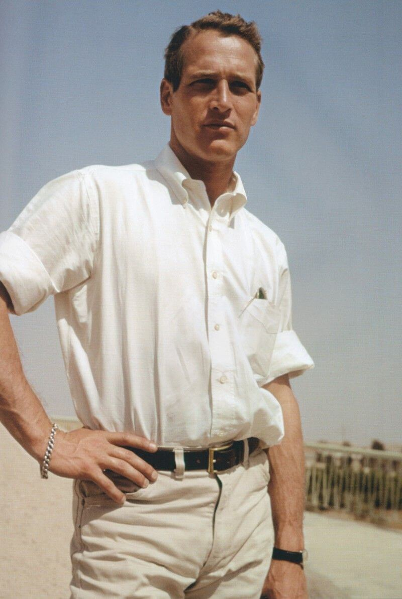
Paul Newman
The original. An oxford button-down tucked into khakis with a slim belt. If you only copy one outfit, copy this one.
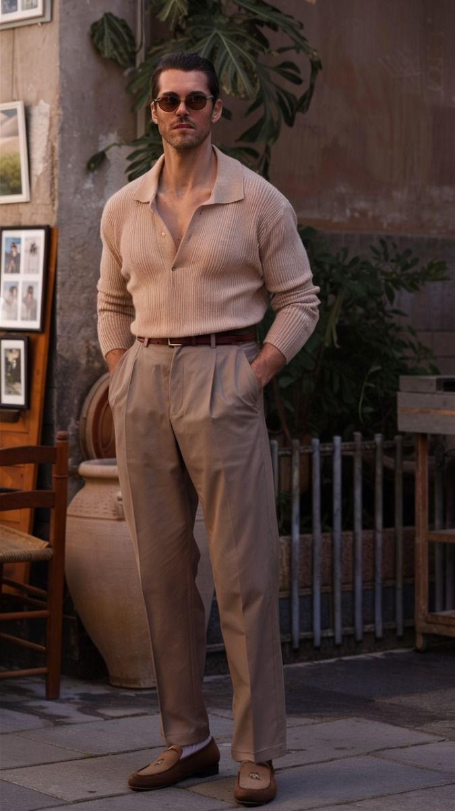
VII · Summer
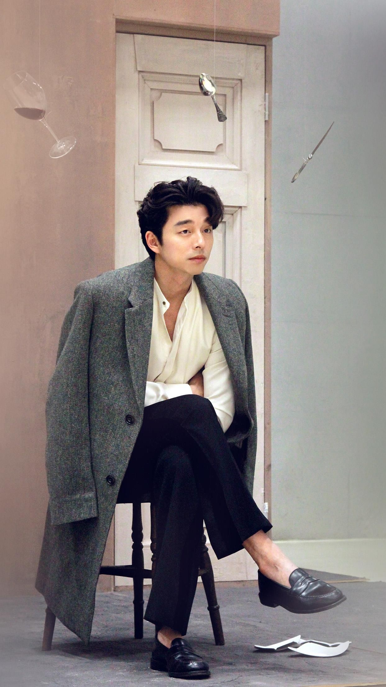
VII · Winter
VIII
The details
Knit polos, fine knits and shirts go in, with a slim leather belt. It defines the waist and instantly looks intentional.

A fine knit over the shoulders, sleeves loosely crossed. Very Riviera, and practical: it's there when the sun goes down.

Slim, simple, on leather or a fine bracelet, worn so it just shows below the cuff. Never a giant sports watch with this look.

No-show socks with loafers in summer; fine wool socks matching your trousers in winter. White socks with loafers only if you mean it.
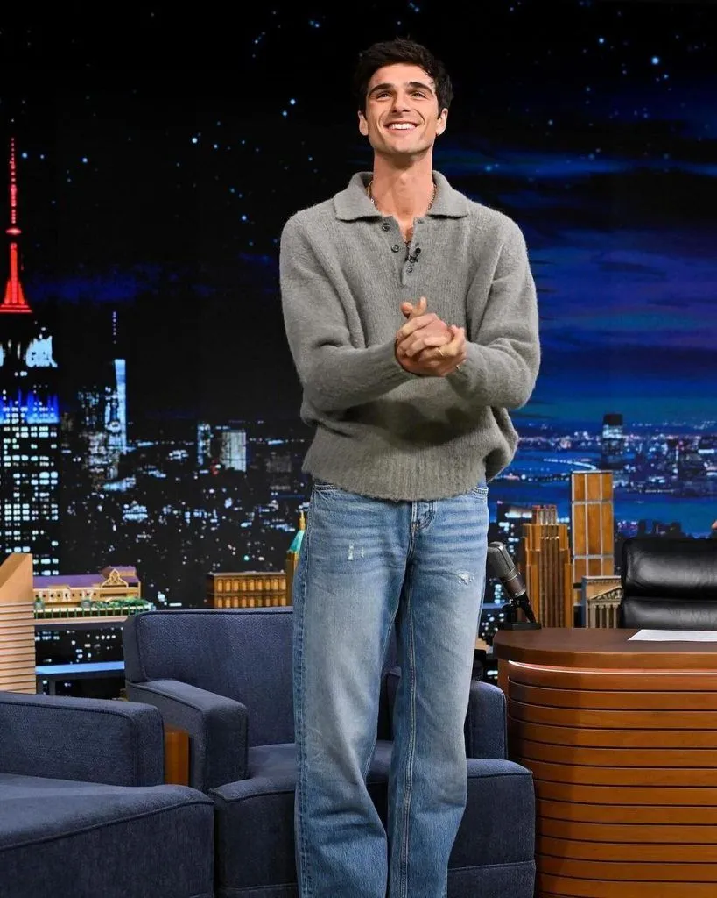
On knits and jackets, push the sleeves to just below the elbow. It shows the watch and forearms and makes anything look relaxed.
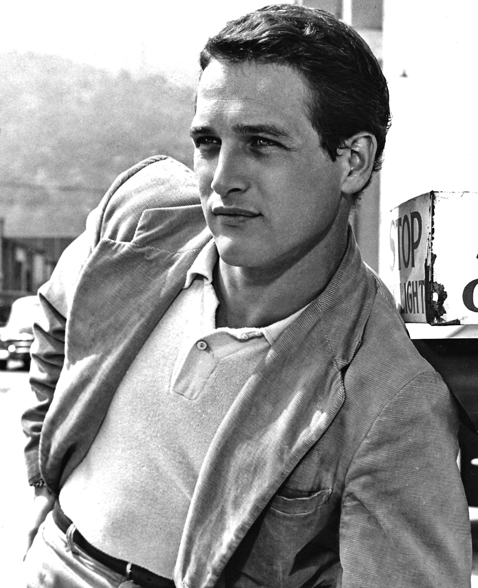
Tortoiseshell or black acetate, classic shapes. Off the face, hook them into the neckline of your shirt, not on top of your head.
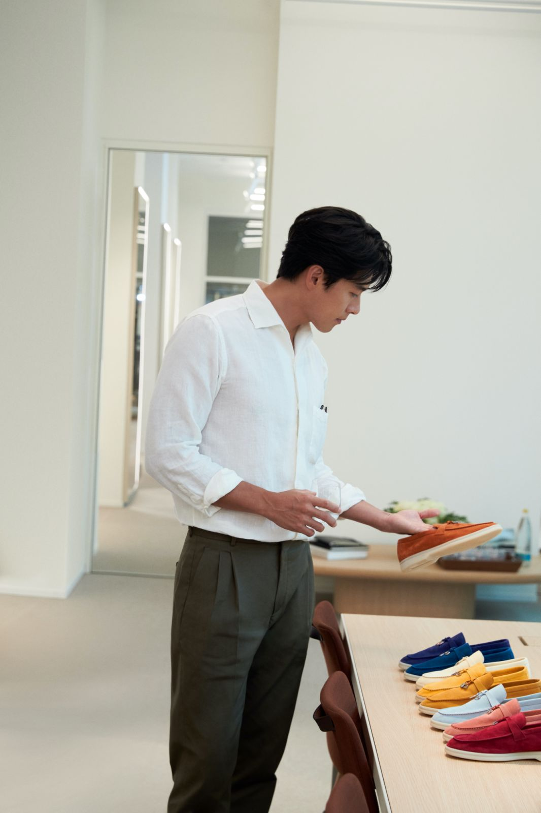
IX · The finish
Hair. A good cut every four weeks, styled with a little matte product. Soft and touchable beats stiff and shiny.
Skin. Cleanser, moisturiser, sunscreen. A trimmed beard or a clean shave; never in between by accident.
Scent. One fragrance, two sprays. Fresh and woody by day, warmer at night. Nobody should smell you before they see you.
Posture. Shoulders back, phone away, walk slower than you think. The best-dressed man in the room is the calmest one.

None of these men owned many clothes. They owned the right ones, and wore them until they became part of them.
So buy less. Choose quiet colours and good fabric. Make sure it fits. Tuck it in, push the sleeves up, clean the shoes. Then stop thinking about it, and go enjoy your day off.
Off duty.
Photographs are used here for personal, non-commercial reference only; all rights remain with the photographers, publications, brands and studios that own them. Images were found via web search, from sources including GQ, Vogue, Who What Wear, BAMF Style, Pinterest, brand lookbooks (Blenin, Percival, Ciszere, Kaufmann) and Unsplash. Film stills belong to their respective studios.
Brand picks are recommendations for well-made basics at fair prices; availability and prices vary by country.
More from lrnWell Suited: dressing up →The Machine on Your Wrist →